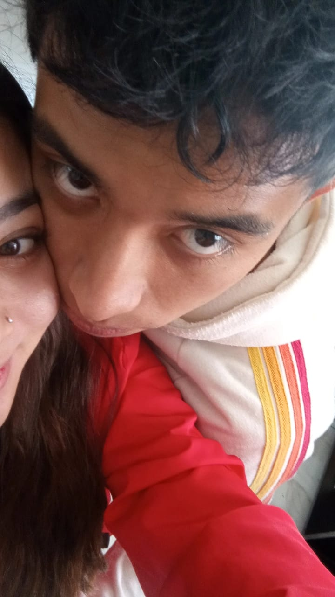
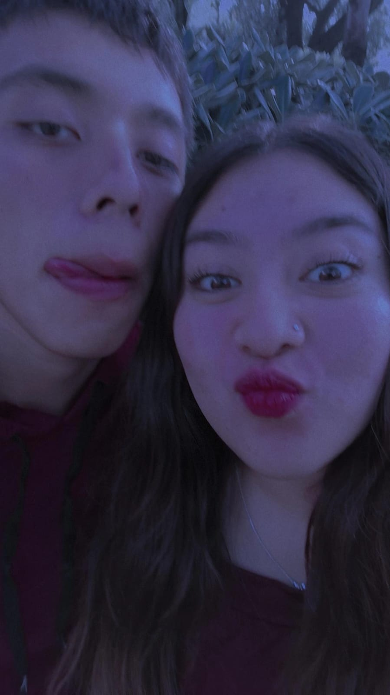

HOLA AMOR DE MI VIDA
Hola mi amor.
Primero que nada, no sé escribir y esto lo escribiré como me salga, entonces de verdad espero que se entienda mi punto y ajam. Yo creo que quiero empezar pidiéndote una disculpa, porque sé que hay muchas acciones mías que, aunque no son con mala intención o por falta de amor, sé que te afectan y afectan a nuestra bonita relación.
Sé que sientes que dejé de hacer muchas cosas, y bueno, me doy cuenta de que no solo lo sientes, es porque sí pasó. Pero no es porque ya no te ame o así. Como te digo, siento que al inicio todo era nuevo y, pues conforme pasó el tiempo, no es que te dejara de amar, solo mmmm pues me sentí más cómodo y más tranquilo, y solo mi forma de demostrarte todo mi afecto y amor se adaptó.
De verdad que yo te amo con todo mi corazón, mi amor. Lo siento si a veces no lo sientes y créeme que me importa que lo sientas, por eso me interesa mucho que me digas cuando algo no te gusta o hago mal o así. Mis cambios de actitudes son más por ser un distraído, pero en serio estoy muy comprometido en cambiar eso, porque me importas tú, me interesas tú y yo quiero que seas feliz conmigo.
Quiero ser más atento para que no se me escape ningún detalle ni nada, mi vida, y demostrarte que quiero estar contigo toda mi vida. Tal vez es muy tedioso estar hablando siempre por algunas diferencias, malentendidos y así, pero creo que es parte de un proceso para pulir esos defectos y que nuestra relación dure para toda la vida, como quiero.
Quiero que seas mi todo, no solo un “ojalá”, un “tal vez” o así. Quiero estar con mi Mel hermosa.
Sobre hoy, perdóname si te hice sentir mal por mi forma de hablar. Nunca quise ser grosero y de verdad que no lo era, pero entiendo que se sienta así. Algunos detalles se me siguen escapando, pero de verdad confío en que puedo poner más atención en esos pequeños detalles, y lo sé muy bien porque yo haría cualquier cosa por ti. Estoy seguro de que puedo ser un mejor novio, un mejor compañero, un mejor amigo.
Sé que últimamente hemos tenido más pláticas así o diferencias, y de verdad entiendo si mis acciones o palabras se malinterpretan y te lastiman. Estoy aprendiendo de cada error y de cada plática que tenemos, porque no quiero seguir cometiendo los mismos errores.
Te amo con toda mi alma y vida, Melannie. ❤️
Te ama tu chan